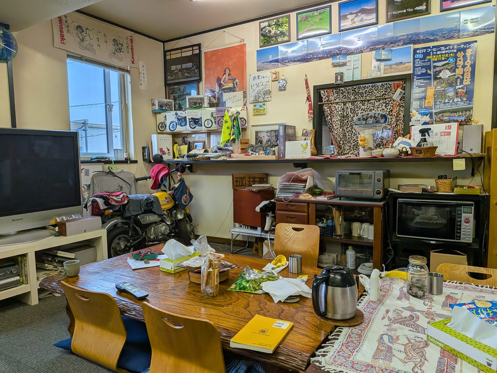
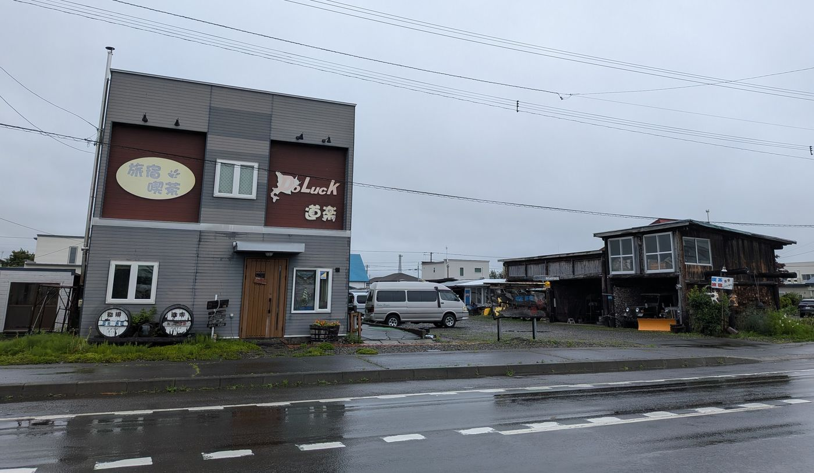
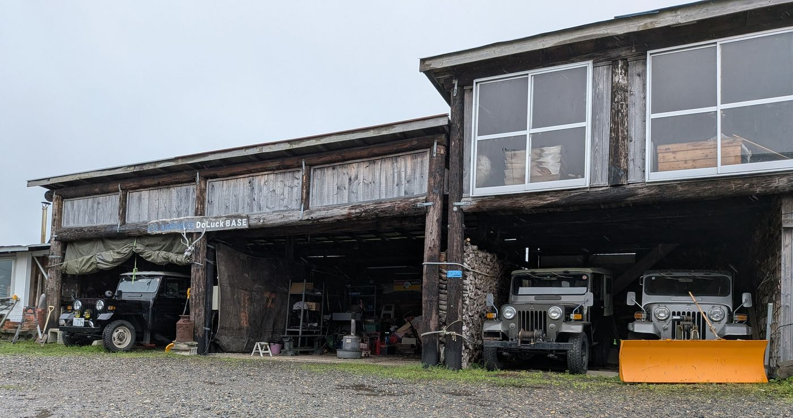
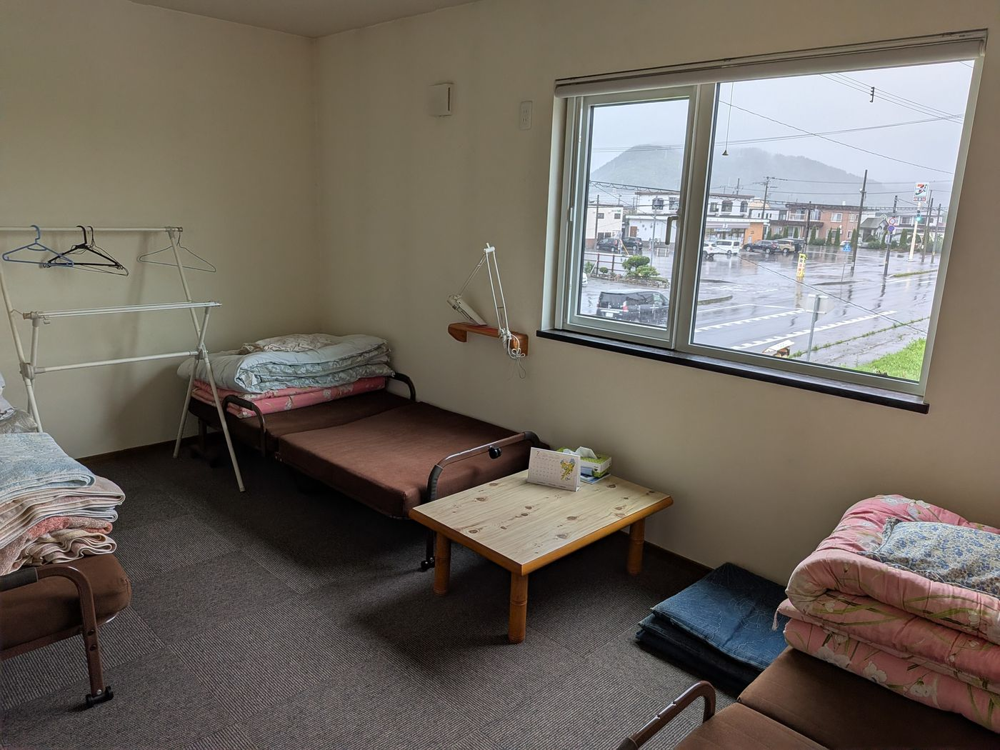
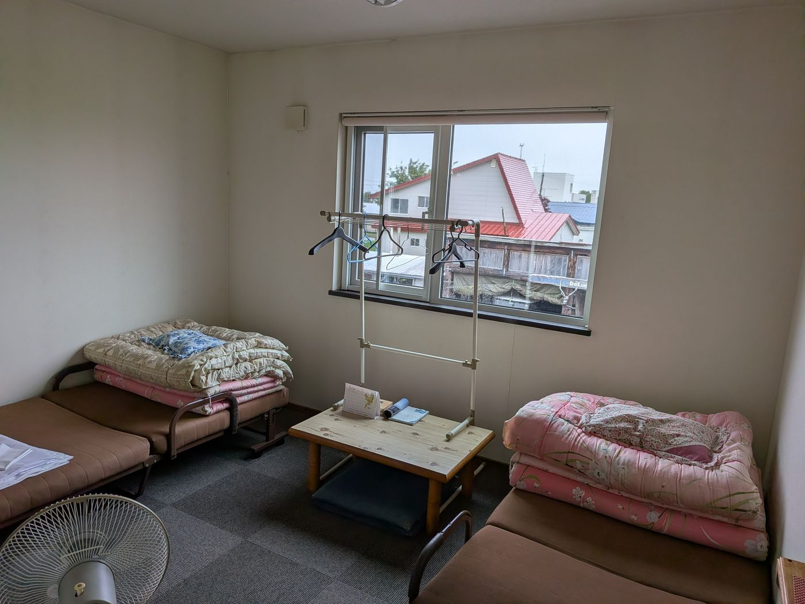
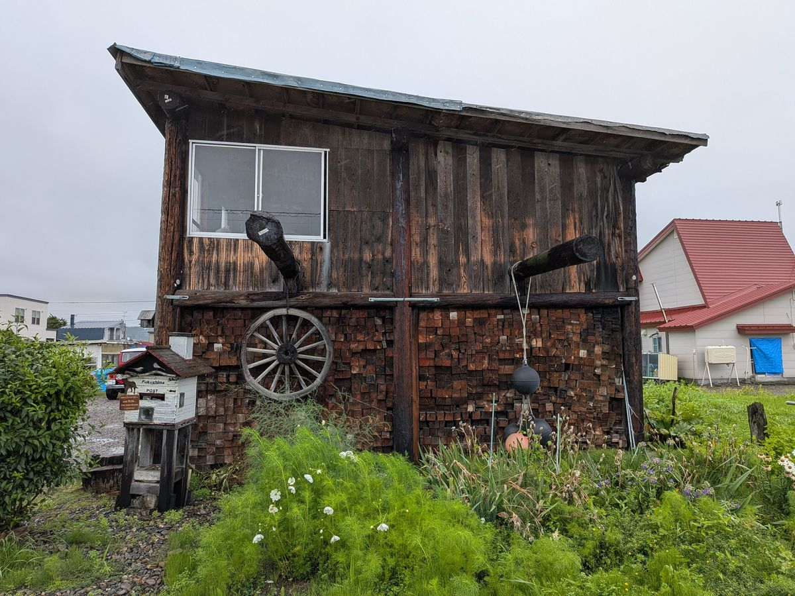
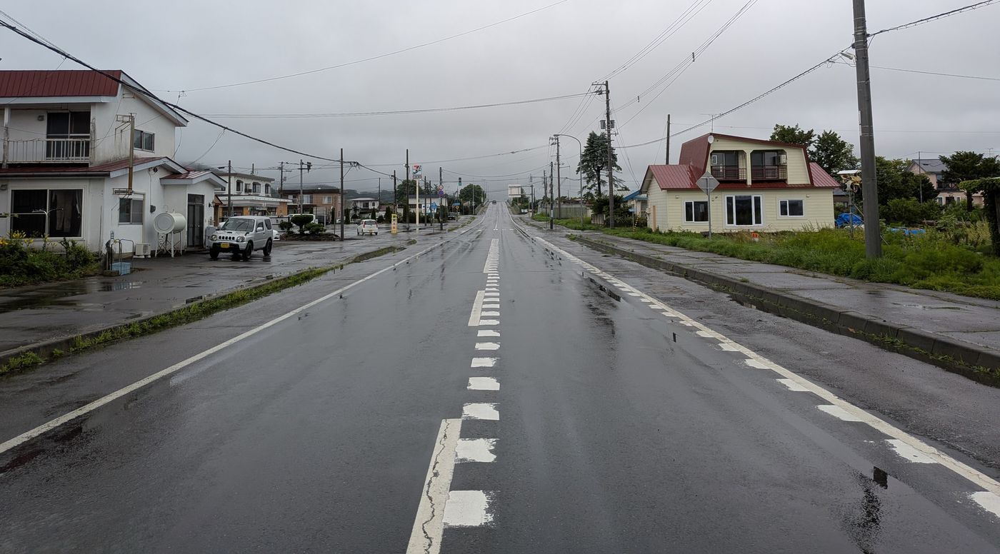

喫茶と旅人宿
都会の時間を、ここに置いていく。
TOKACHI・IKEDA — SINCE 2008
SCROLL
喫茶と旅人宿
道楽とは——
道（ロード）をたのしむ、
道（趣味）をたのしむ、
道（人生）をたのしむ心。
2008
Since
¥4,000〜／素泊まり
ご料金
4月1日〜10月31日
営業期間
お知らせ
喫茶
薪ストーブ（西ドイツweso製）が、あたたかい店内。オーナー手作りのベンチとテーブル、町民手作りのカップで、一杯のコーヒーを。
営業時間
10:00 – 18:00
定休日
火曜日

旅宿
YH形式の男女別相部屋。旅人同士の語らいを大切にする、素朴であたたかい宿です。
営業期間は4月1日から10月31日まで。
¥4,000〜／素泊まり
とほネットワーク旅人宿の会 加盟宿
旅宿についてくわしくSnapshots






Snapshots
あゆみ
大阪から北海道へ。オーナー一家の、移住の物語。
物語を読むAround Tokachi
観光のあとは、なにもしない時間を。
それが道楽流、十勝の過ごし方。
※時間は車での目安。ツーリングにもおすすめ。
For Riders
バイク旅の拠点に、道楽をどうぞ。
屋根付きの広い駐車場
早朝の出発もOK
夜は旅人同士で語らいを
Guest Book
きっと、次の旅人の道しるべになります。
Googleでクチコミを書く